Skip to content← Back to the storyCockfights Online
Photos & screenshots
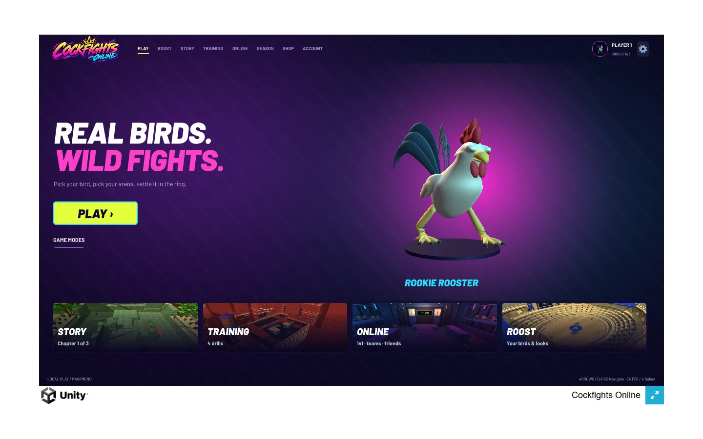
Home screen of the local WebGL export, with live character presentation and mode entry points.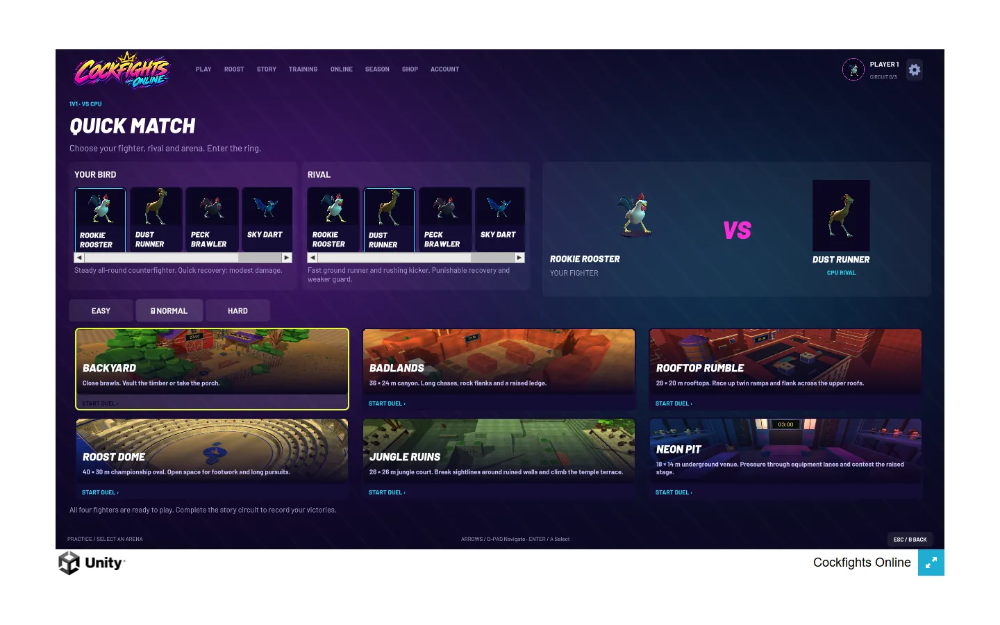
Quick Match selects player/rival classes, CPU difficulty and one of six arenas.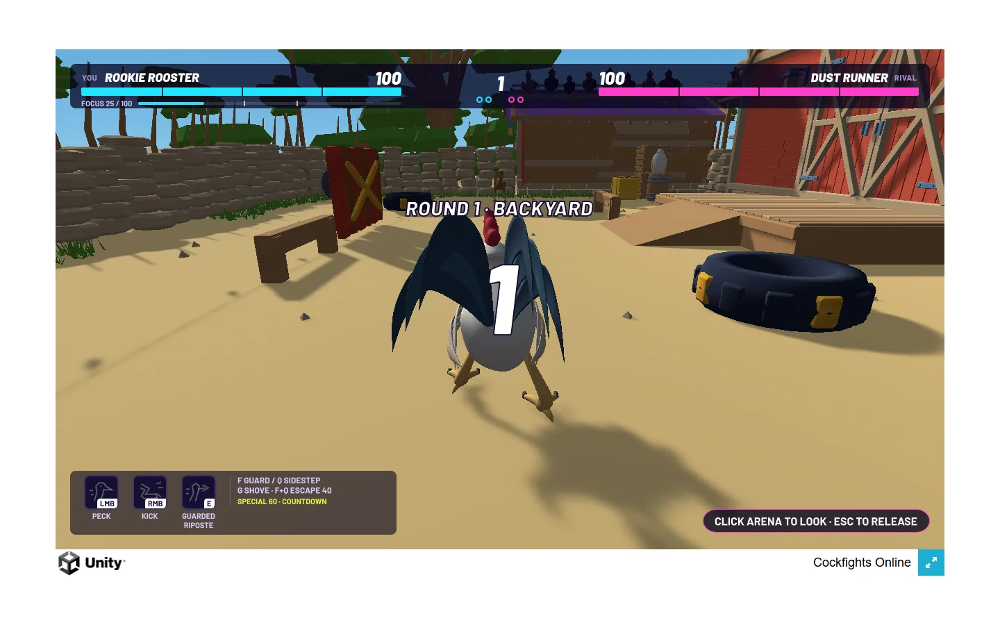
A real local Backyard round countdown.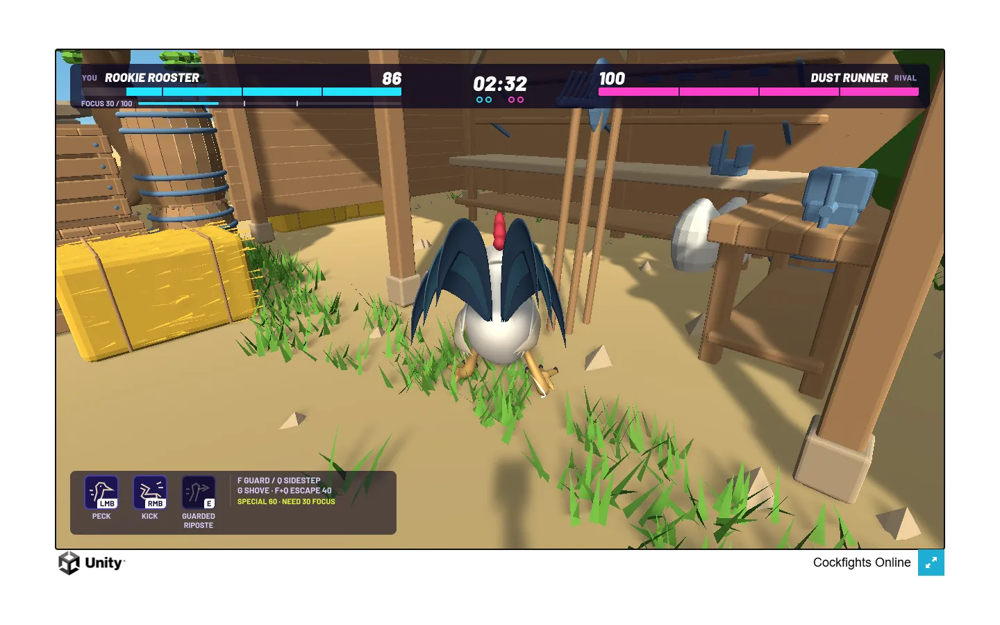
After actual movement input near Backyard scenery.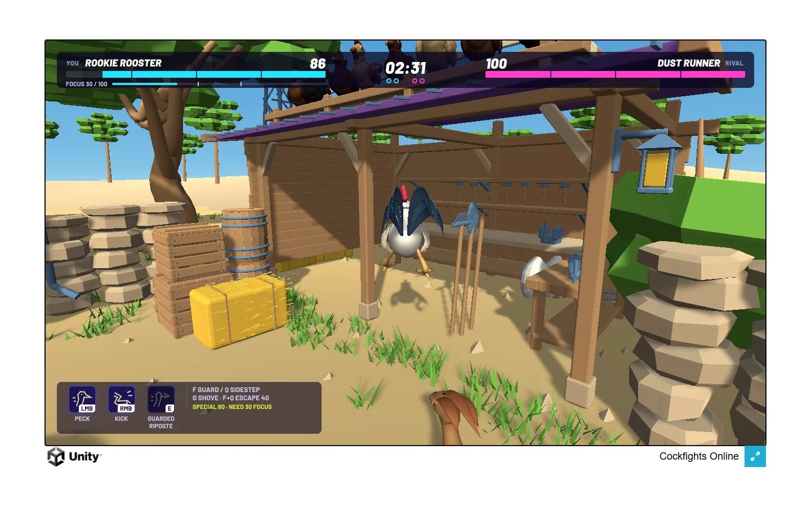
Airborne jump near the shed, showing the body and surrounding geometry.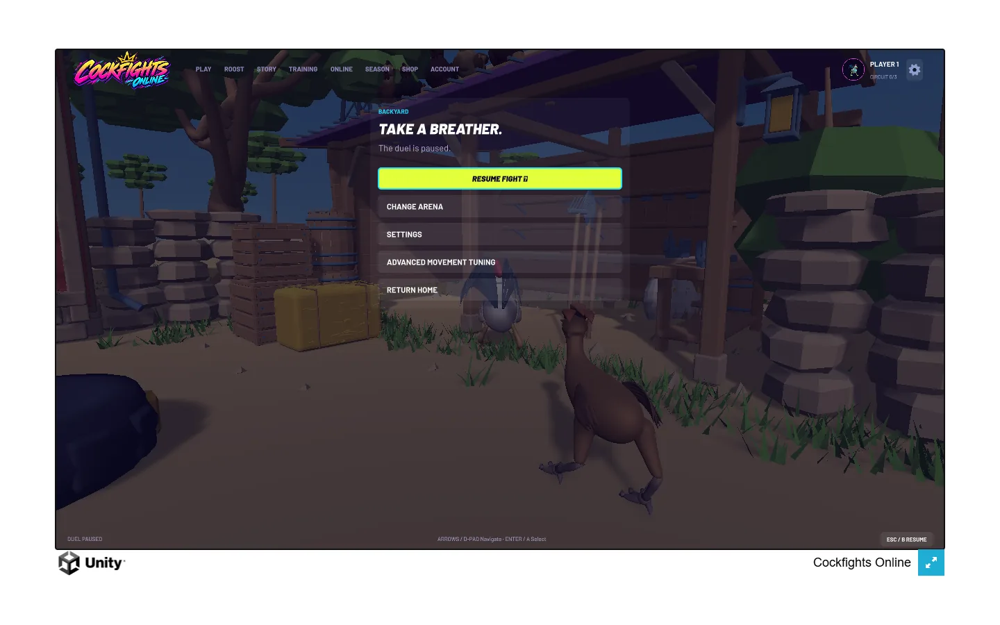
Pause overlay over the live arena, including movement tuning, settings and arena-change paths.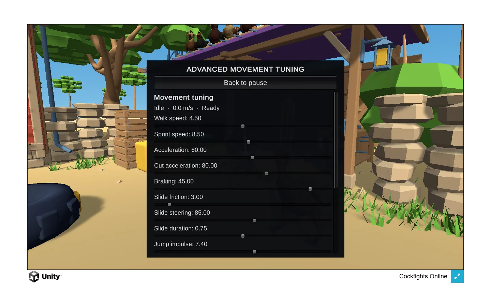
In-game movement tuning panel exposes baseline speed, acceleration, braking, slide behavior and jump impulse.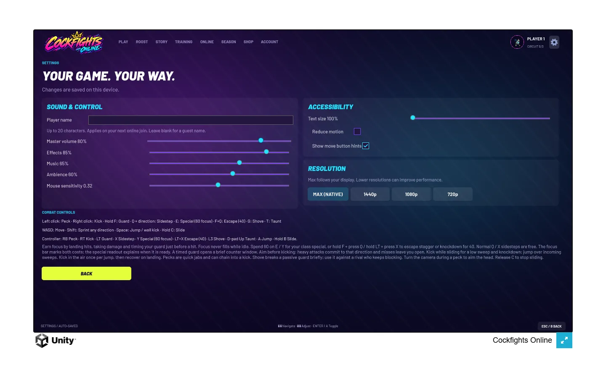
Settings include sound channels, sensitivity, text scale, reduced motion, move hints and resolution limits.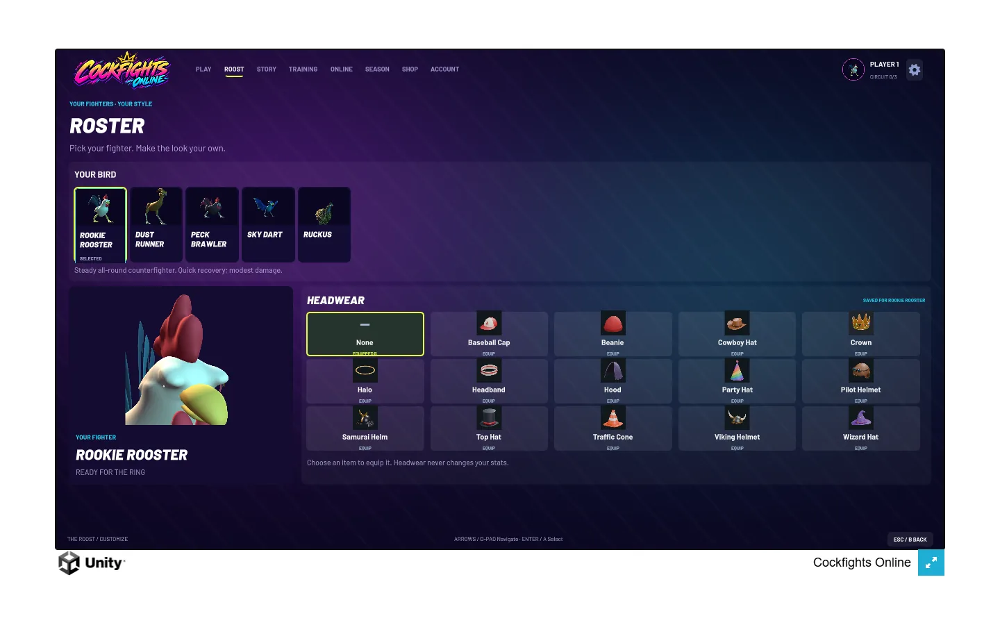
Local Roost with character/headwear preview; it also shows a Ruckus card beyond the four starter styles in the inspected source.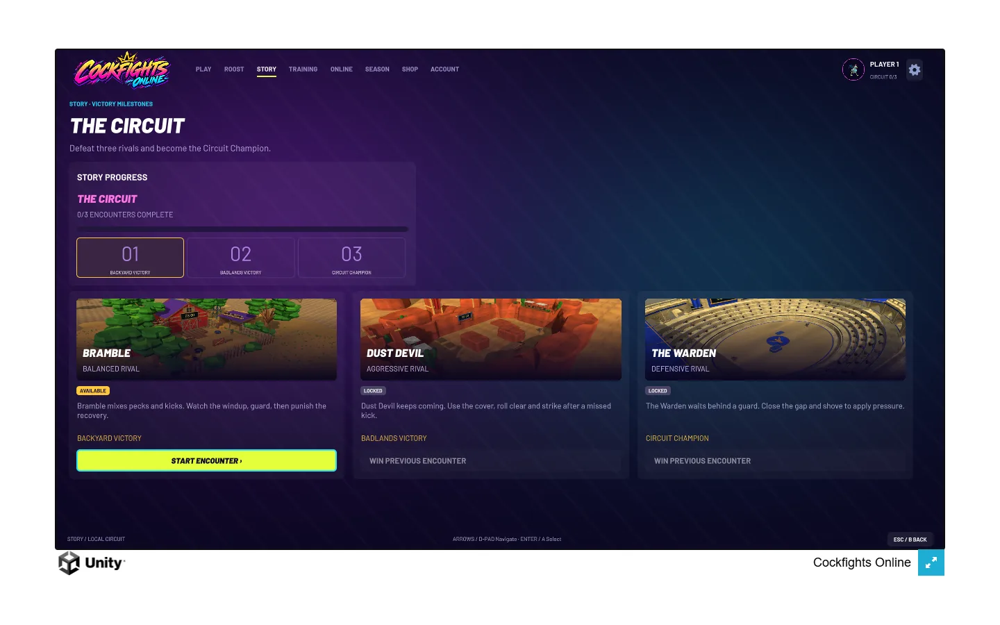
Three-stage local circuit: Bramble, Dust Devil and The Warden, with first encounter available and later encounters locked.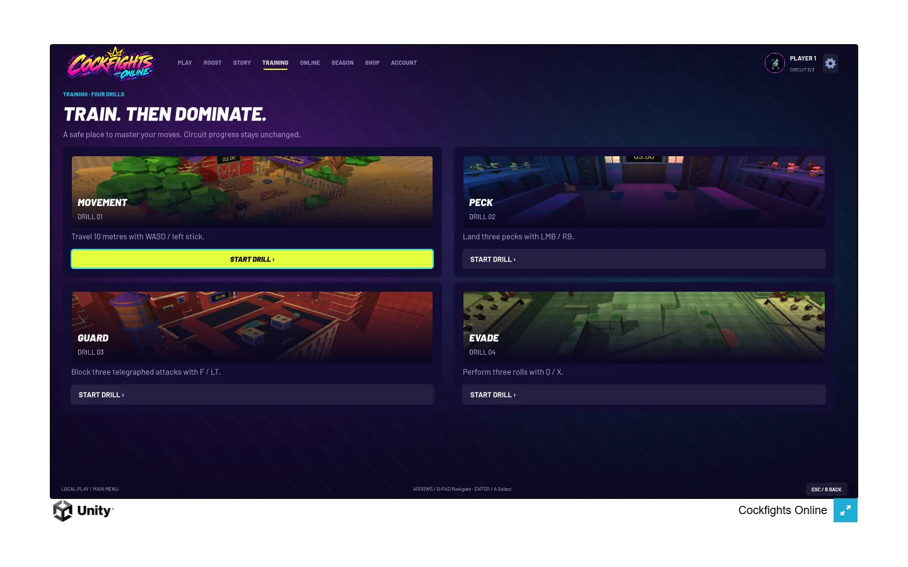
Four drill entry points isolate movement, peck, guard and evade.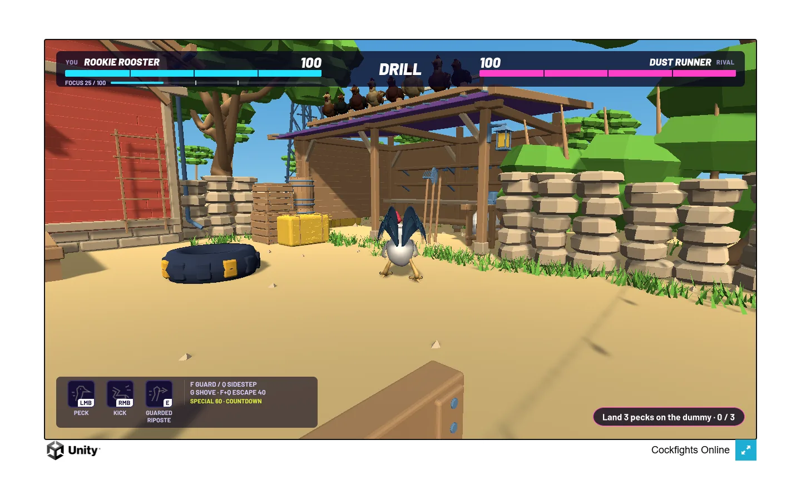
The real in-world peck drill and event-driven 0/3 progress readout.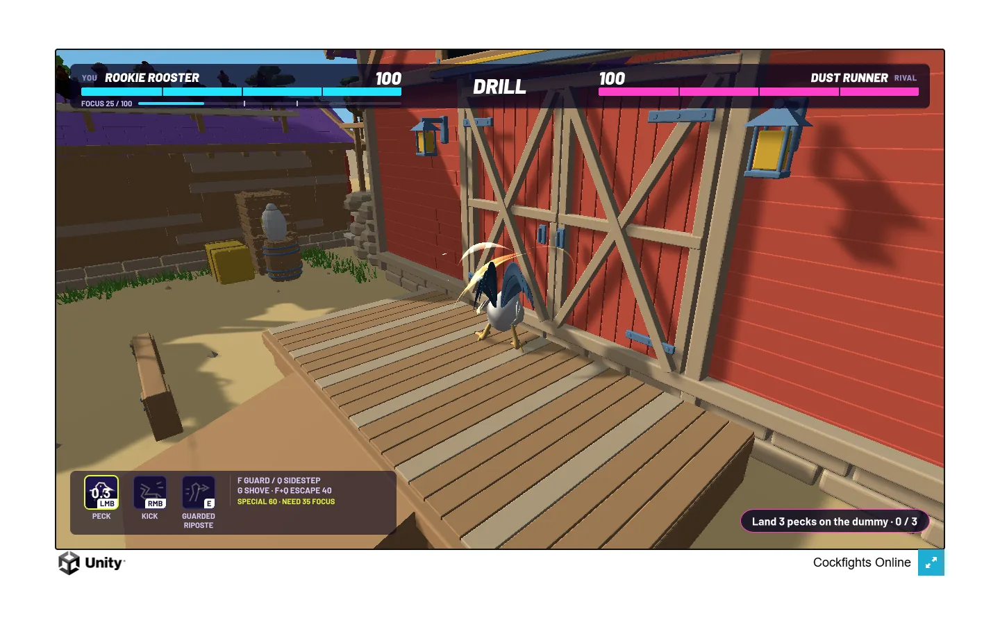
Peck action effect and cooldown in the drill; progress remains 0/3, so this attempt is not described as a landed training hit.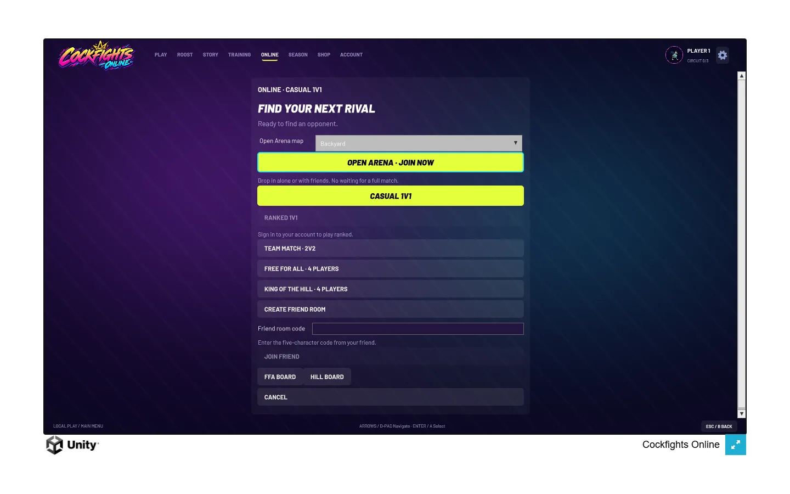
Online mode choices in an offline capture context.